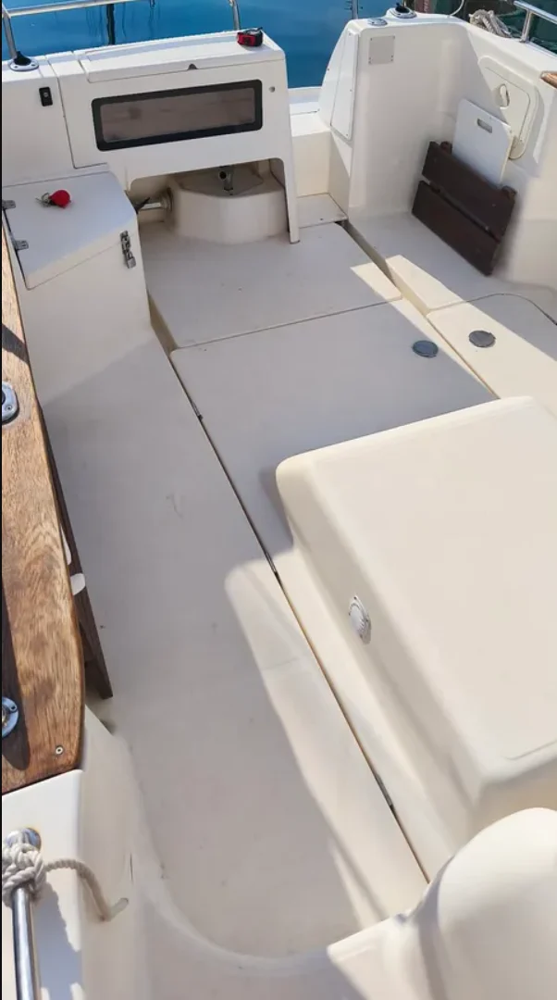
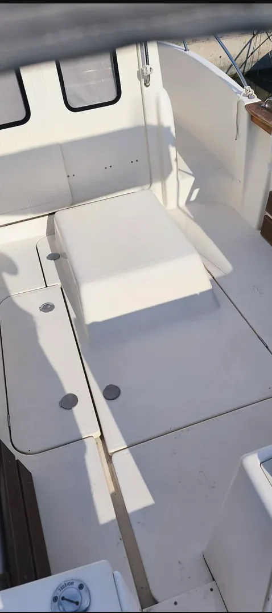
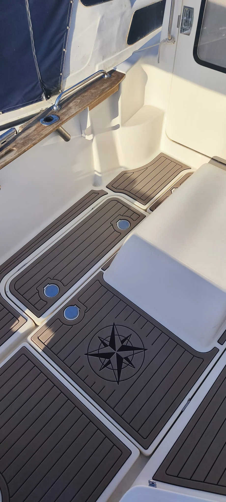
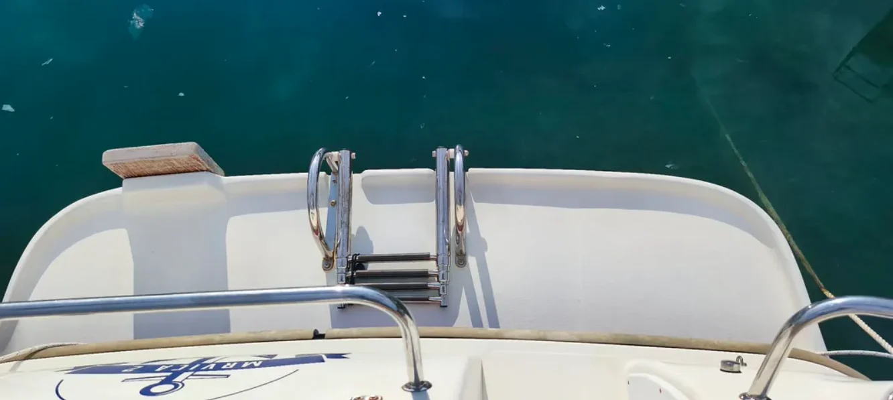
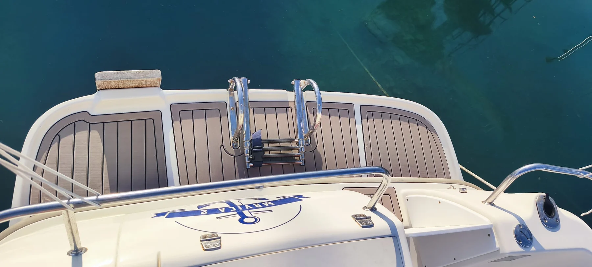

Arvor 215 AS
EVA paneli oblikovani za kokpit, prolaze i krmene platforme. Kontrastne linije, zasebni poklopci i kompasna gravura povezuju cijelu izvedbu.


Svaki detalj
ima svoje mjesto.
Raspored panela, linije i kompasni motiv definirani su u digitalnom dizajnu. CNC obradom nastaju zasebne obloge za kokpit, poklopce, prolaze i krmene platforme.
Cijena izrade obloga za prikazani projekt, bez postavljanja. Svaku novu ponudu prilagođavamo površini, materijalu i opsegu radova.
Isti brod.
Novi doživljaj palube.
Pogledajte stvarne površine prije i poslije oblaganja.
Kokpit

Bočni prolaz


Krmene platforme


Fotografije su snimljene iz različitih kutova. Prikazuju stvarno stanje istog plovila; nisu digitalna simulacija. Kliknite fotografiju za izvorni prikaz.
Pogled izbliza.
Kliknite fotografiju za veći prikaz · 7 foto


Vaša nova paluba
počinje razgovorom.
Imate ideju za svoje plovilo? Pošaljite nam fotografije i zajedno ćemo definirati oblogu koja mu pristaje.
Zatražite ponudu- Model i naziv vašeg plovila
- Fotografije površina koje želite obložiti
- Lokaciju broda i svoje želje
Upiti i dogovor putem WhatsAppa
Kako izgleda narudžbaKako pripremiti šablone